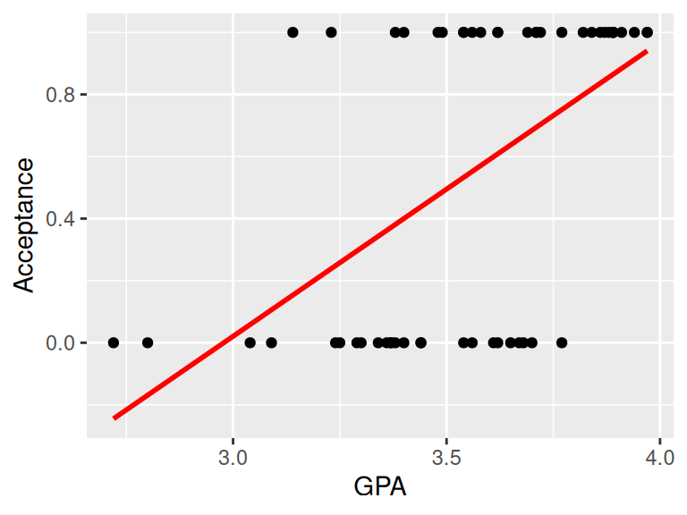
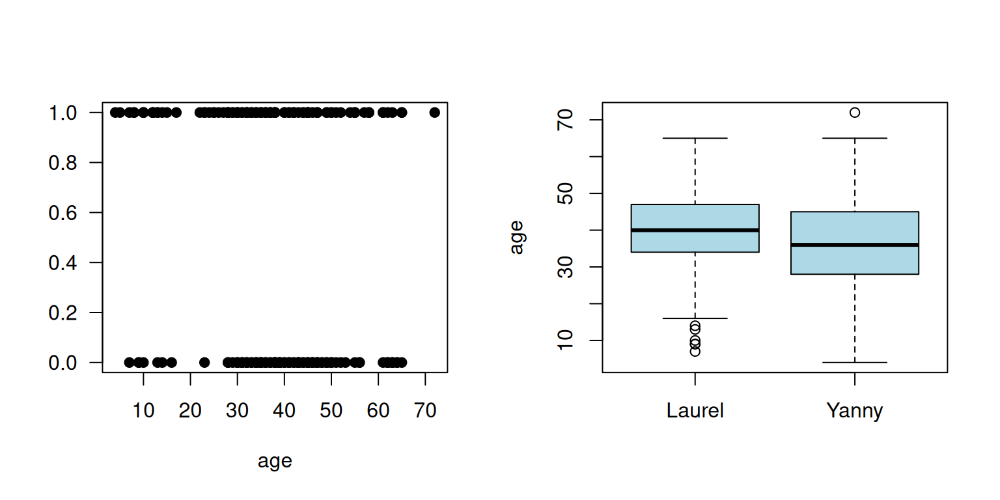
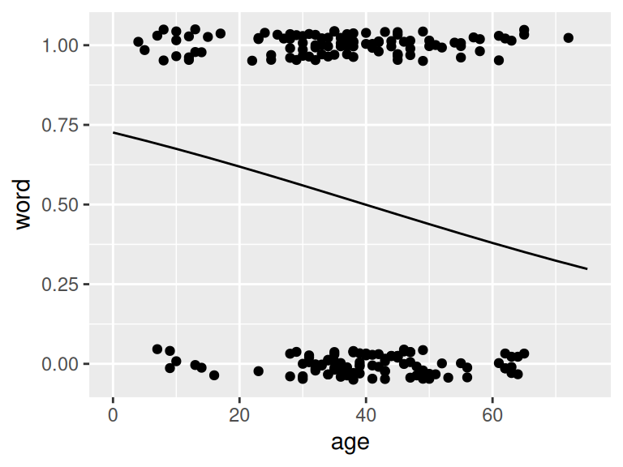
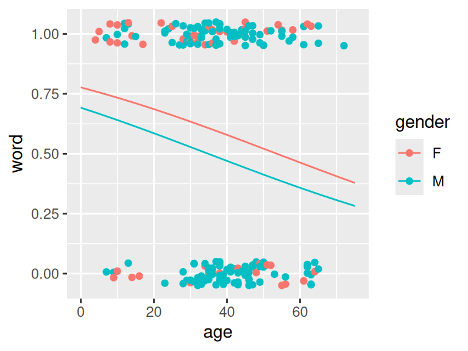
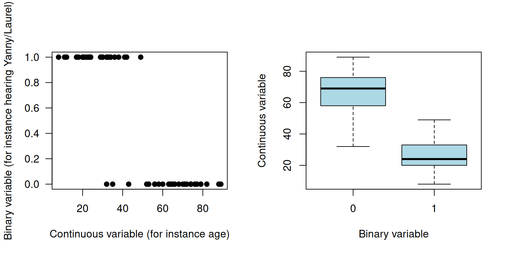
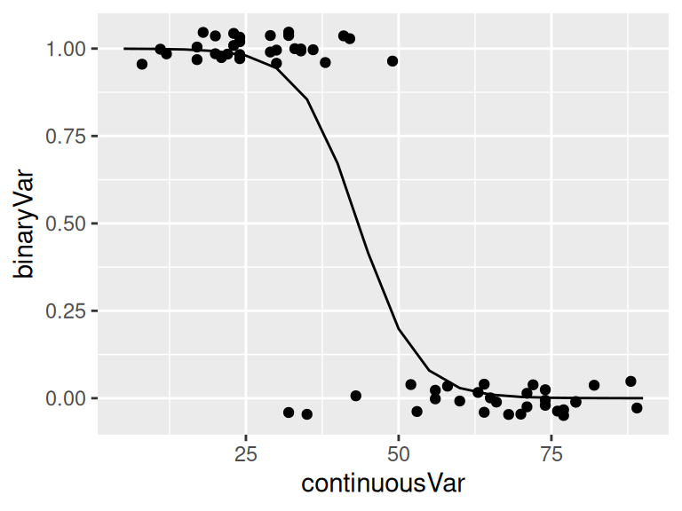
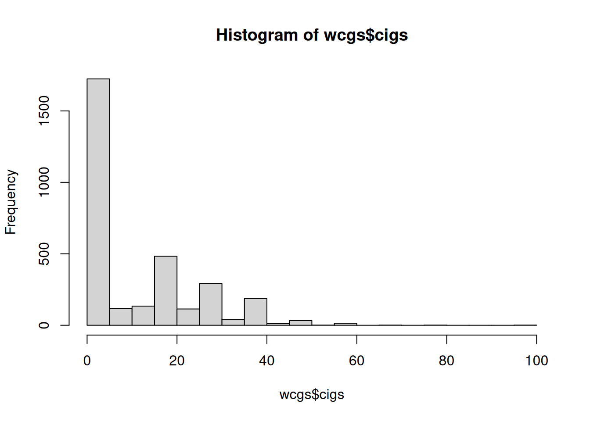

18 Generalized linear models
Aims
- to briefly introduce GLMs via examples of modeling binary and count response
Learning outcomes
- to understand the limits of linear regression and the application of GLMs
- to be able to use
glm()function to fit and interpret logistic and Poisson regression
18.1 Why Generalized Linear Models (GLMs)
- GLMs extend linear model framework to outcome variables that do not follow normal distribution
- They are most frequently used to model binary, categorical or count data
- In the Galapagos Island example we have tried to model Species using linear model
- It kind of worked but the predicted counts were not counts (natural numbers) but rational numbers instead that make no sense when taking about count data
- Similarly, fitting a regression line to binary data yields predicted values that could take any value, including \(<0\)
- not to mention that it is hard to argue that the values of 0 and 1s are normally distributed
18.2 Logistic regression
- Yanny or Laurel auditory illusion appeared online in May 2018. You could find lots of information about it, together with some plausible explanations why some people hear Yanny and some year Laurel
- One of the explanation is that with age we lose the ability to hear certain sounds
- To see if there is evidence for that, someone has already collected some data for 198 people including their age and gender
# Read in and preview data
yl <- read.csv("data/lm/YannyLaurel.csv")
head(yl)
## hear age gender
## 1 Yanny 4 F
## 2 Yanny 5 F
## 3 Yanny 7 M
## 4 Laurel 7 M
## 5 Yanny 8 F
## 6 Yanny 8 F
# Recode Laurel to 0 and Yanny as 1 in new variable
yl$word <- 0
yl$word[yl$hear=="Yanny"] <- 1
# Make some exploratory plots
par(mfrow=c(1,2))
plot(yl$age, yl$word, pch=19, xlab="age", ylab="", las=1)
boxplot(yl$age~yl$hear, xlab="", ylab="age", col="lightblue")
- Since the response variable takes only two values (Yanny or Laurel) we use GLM model
- to fit logistic regression model for the probability of hearing Yanny
- we let \(p_i=P(Y_i=1)\) denote the probability of hearing Yanny (success)
- and we assume that the response follows binomial distribution: \(Y_i \sim Bi(1, p_i)\) distribution
- We can write the regression model now as: \[log(\frac{p_i}{1-p_i})=\beta_0 + \beta_1x_i\] and given the properties of logarithms this is also equivalent to: \[p_i = \frac{exp(\beta_0 + \beta_1x_i)}{1 + exp(\beta_0 + \beta_1x_i)}\]
- In essence, the GLM generalizes linear regression by allowing the linear model to be related to the response variable via a link function.
- Here, the link function \(log(\frac{p_i}{1-p_i})\) provides the link between the binomial distribution of \(Y_i\) (hearing Yanny) and the linear predictor (age)
- Thus the GLM model can be written as \[g(\mu_i)=\mathbf{X}\boldsymbol\beta\] where
g()is the link function. - We use
glm()function in R to fit GLM models
# fit logistic regression model
logmodel.1 <- glm(word ~ age, family = binomial(link="logit"), data = yl)
# print model summary
print(summary(logmodel.1))
Call:
glm(formula = word ~ age, family = binomial(link = "logit"),
data = yl)
Coefficients:
Estimate Std. Error z value Pr(>|z|)
(Intercept) 0.97429 0.42678 2.283 0.0224 *
age -0.02444 0.01048 -2.332 0.0197 *
---
Signif. codes: 0 '***' 0.001 '**' 0.01 '*' 0.05 '.' 0.1 ' ' 1
(Dispersion parameter for binomial family taken to be 1)
Null deviance: 274.41 on 197 degrees of freedom
Residual deviance: 268.73 on 196 degrees of freedom
AIC: 272.73
Number of Fisher Scoring iterations: 4# plot
ggPredict(logmodel.1)Warning: `aes_string()` was deprecated in ggplot2 3.0.0.
ℹ Please use tidy evaluation idioms with `aes()`.
ℹ See also `vignette("ggplot2-in-packages")` for more information.
ℹ The deprecated feature was likely used in the ggiraphExtra package.
Please report the issue to the authors.
# to get predictions use predict() functions
# if no new observations is specified predictions are returned for the values of exploratory variables used
# we specify response to return prediction on the probability scale
predict(logmodel.1, type="response") 1 2 3 4 5 6 7 8
0.7061023 0.7010050 0.6906602 0.6906602 0.6854144 0.6854144 0.6801208 0.6801208
9 10 11 12 13 14 15 16
0.6747804 0.6747804 0.6747804 0.6747804 0.6639632 0.6639632 0.6639632 0.6584885
17 18 19 20 21 22 23 24
0.6584885 0.6584885 0.6529712 0.6529712 0.6474126 0.6418137 0.6361759 0.6074493
25 26 27 28 29 30 31 32
0.6016063 0.6016063 0.6016063 0.5957342 0.5898346 0.5898346 0.5839091 0.5779592
33 34 35 36 37 38 39 40
0.5719866 0.5719866 0.5719866 0.5719866 0.5719866 0.5719866 0.5659929 0.5659929
41 42 43 44 45 46 47 48
0.5659929 0.5599798 0.5599798 0.5599798 0.5599798 0.5599798 0.5599798 0.5599798
49 50 51 52 53 54 55 56
0.5539491 0.5539491 0.5539491 0.5539491 0.5539491 0.5479025 0.5479025 0.5479025
57 58 59 60 61 62 63 64
0.5479025 0.5479025 0.5479025 0.5479025 0.5418417 0.5418417 0.5418417 0.5418417
65 66 67 68 69 70 71 72
0.5418417 0.5357685 0.5357685 0.5357685 0.5357685 0.5357685 0.5357685 0.5357685
73 74 75 76 77 78 79 80
0.5296847 0.5296847 0.5296847 0.5296847 0.5296847 0.5296847 0.5296847 0.5296847
81 82 83 84 85 86 87 88
0.5235921 0.5235921 0.5235921 0.5235921 0.5235921 0.5235921 0.5174924 0.5174924
89 90 91 92 93 94 95 96
0.5174924 0.5174924 0.5174924 0.5174924 0.5113875 0.5113875 0.5113875 0.5113875
97 98 99 100 101 102 103 104
0.5113875 0.5113875 0.5113875 0.5113875 0.5113875 0.5113875 0.5113875 0.5052791
105 106 107 108 109 110 111 112
0.5052791 0.5052791 0.5052791 0.5052791 0.4991693 0.4991693 0.4991693 0.4991693
113 114 115 116 117 118 119 120
0.4930596 0.4930596 0.4930596 0.4930596 0.4930596 0.4869521 0.4869521 0.4869521
121 122 123 124 125 126 127 128
0.4869521 0.4869521 0.4808484 0.4808484 0.4808484 0.4808484 0.4808484 0.4808484
129 130 131 132 133 134 135 136
0.4747504 0.4747504 0.4747504 0.4747504 0.4686600 0.4686600 0.4686600 0.4686600
137 138 139 140 141 142 143 144
0.4686600 0.4686600 0.4686600 0.4686600 0.4686600 0.4686600 0.4625789 0.4625789
145 146 147 148 149 150 151 152
0.4625789 0.4625789 0.4625789 0.4565089 0.4565089 0.4565089 0.4565089 0.4565089
153 154 155 156 157 158 159 160
0.4565089 0.4565089 0.4504518 0.4504518 0.4444093 0.4444093 0.4444093 0.4444093
161 162 163 164 165 166 167 168
0.4444093 0.4383833 0.4383833 0.4383833 0.4383833 0.4383833 0.4323753 0.4323753
169 170 171 172 173 174 175 176
0.4263872 0.4263872 0.4204206 0.4144771 0.4085585 0.4085585 0.4085585 0.4085585
177 178 179 180 181 182 183 184
0.4026662 0.4026662 0.3968019 0.3909671 0.3909671 0.3736547 0.3736547 0.3736547
185 186 187 188 189 190 191 192
0.3679527 0.3679527 0.3679527 0.3679527 0.3622873 0.3622873 0.3622873 0.3622873
193 194 195 196 197 198
0.3566600 0.3566600 0.3510719 0.3510719 0.3510719 0.3131544 - The regression equation for the fitted model is: \[log(\frac{\hat{p_i}}{1-\hat{p_i}})=0.97 - 0.02x_i\]
- we see from the output that \(\hat{\beta_0} = 0.97\) and \(\hat{\beta_1} = -0.02\)
- these estimates are arrived at via maximum likelihood estimation, something that is out of scope here
- but similarly to linear models, we can test the null hypothesis \(H_0:\beta_1=0\) by comparing, \(z = \frac{\hat{\beta_1}}{e.s.e(\hat{\beta_1)}} = -2.33\) with a standard normal distribution, and the associated value is small so there is enough evidence to reject the null, meaning that age is significantly associated with the probability with hearing Laurel and Yanny, Wald test
- the same conclusion can be reached if we compare the residual deviance
Deviance
- deviance is the number that measures the goodness of fit of a logistic regression model
- we use saturated and residual deviance to assess model, instead of \(R^2\) or \(R^2(adj)\)
- for a GLM model that fits the data well the approximate deviance \(D\) is \[\chi^2(m-p)\] where \(m\) is the number of parameters in the saturated model (full model) and \(p\) is the number of parameters in the model of interest
- for our above model we have \(274.41 - 268.73 = 5.68\) which is larger than 95th percentile of \(\chi^2(197-196)\)
qchisq(df=1, p=0.95)
## [1] 3.841459- i.e. \(5.68 > 3.84\) and again we can conclude that age is a significant term in the model
Odds ratios
- In logistic regression we often interpret the model coefficients by taking \(e^{\hat{\beta}}\)
- and we talk about odd ratios
- e.g. we can say, given our above model, \(e^{-0.02444} = 0.9758562\) that for each unit increase in age the odds of hearing Yanny get multiplied by 0.98
Other covariates
- Finally, we can use the same logic as in multiple regression to expand by models by additional variables, numerical, binary or categorical
- E.g. we can test whether there is a gender effect when hearing Yanny or Laurel
# fit logistic regression including age and gender
logmodel.2 <- glm(word ~ age + gender, family = binomial(link="logit"), data = yl)
# print model summary
print(summary(logmodel.2))
##
## Call:
## glm(formula = word ~ age + gender, family = binomial(link = "logit"),
## data = yl)
##
## Coefficients:
## Estimate Std. Error z value Pr(>|z|)
## (Intercept) 1.24682 0.48166 2.589 0.00964 **
## age -0.02325 0.01061 -2.191 0.02848 *
## genderM -0.43691 0.32798 -1.332 0.18282
## ---
## Signif. codes: 0 '***' 0.001 '**' 0.01 '*' 0.05 '.' 0.1 ' ' 1
##
## (Dispersion parameter for binomial family taken to be 1)
##
## Null deviance: 274.41 on 197 degrees of freedom
## Residual deviance: 266.94 on 195 degrees of freedom
## AIC: 272.94
##
## Number of Fisher Scoring iterations: 4
# plot model
ggPredict(logmodel.2)
Simulated data
This is beyond the scope of this course but a more advanced model might be needed to better explain these specific data. As an exercise, let us simulate a dataset where the logistic regression would be a better fit (it would probably be the case if the age effect had been larger than the one observed in the Yanny/Laurel example above).
# In a similar way as for the first Yanny/Laurel model above (logmodel.1)
# where a binary variable (hearing Yanny/Laurel) was explained by one
# continuous variable (age), let us simulate the data below:
# - we will simulate a sample of 60 individuals where the binary variable
# (e.g. hearing Yanny/Laurel) is equal to zero 30 times and to one 30 times
set.seed(1)
n <- 30
binaryVar <- c(rep(0, n), rep(1, n))
# - we would like to simulate a strong effect of the continuous variable
# so we can simulate people with binaryVar 0 and binaryVar 1 from
# different distributions.
distr0 <- rnorm(n, mean=65, sd=15) %>% round()
distr1 <- rnorm(n, mean=25, sd=12) %>% round()
dat <- data.frame(binaryVar=c(rep(0, n), rep(1, n)),
continuousVar = c(distr0, distr1))
idx <- sample(1:(2*n), 2*n)
dat <- dat[idx,] #reorder samples randomly
head(dat)
## binaryVar continuousVar
## 42 1 22
## 32 1 24
## 39 1 38
## 51 1 30
## 29 0 58
## 34 1 24
# Make some exploratory plots
par(mfrow=c(1,2))
plot(dat$continuousVar, dat$binaryVar, pch=19,
xlab="Continuous variable (for instance age)",
ylab="Binary variable (for instance hearing Yanny/Laurel)", las=1)
boxplot(dat$continuousVar~dat$binaryVar,
xlab="Binary variable",
ylab="Continuous variable",
col="lightblue")
# fit logistic regression model
logmodel.3 <- glm(binaryVar ~ continuousVar,
family = binomial(link="logit"), data = dat)
# print model summary
print(summary(logmodel.3))
##
## Call:
## glm(formula = binaryVar ~ continuousVar, family = binomial(link = "logit"),
## data = dat)
##
## Coefficients:
## Estimate Std. Error z value Pr(>|z|)
## (Intercept) 9.16941 2.55369 3.591 0.000330 ***
## continuousVar -0.21133 0.06112 -3.458 0.000544 ***
## ---
## Signif. codes: 0 '***' 0.001 '**' 0.01 '*' 0.05 '.' 0.1 ' ' 1
##
## (Dispersion parameter for binomial family taken to be 1)
##
## Null deviance: 83.178 on 59 degrees of freedom
## Residual deviance: 19.123 on 58 degrees of freedom
## AIC: 23.123
##
## Number of Fisher Scoring iterations: 7
# plot
ggPredict(logmodel.3)
18.3 Poisson regression
- GLMs can be also applied to count data
- e.g. hospital admissions due to respiratory disease or number of bird nests in a certain habitat
- here, we commonly assume that data follow the Poisson distribution \(Y_i \sim Pois(\mu_i)\)
- and the corresponding model is \[E(Y_i)=\mu_i = \eta_ie^{\mathbf{x_i}^T\boldsymbol\beta}\] with a log link \(\ln\mu_i = \ln \eta_i + \mathbf{x_i}^T\boldsymbol\beta\)
Data set Suppose we wish to model \(Y_i\) the number of cancer cases in the i-th intermediate geographical location (IG) in Glasgow. We have collected data for 271 regions, a small areas that contain between 2500 and 6000 people. Together with cancer occurrence with have data:
- Y_all: number of cases of all types of cancer in the IG in 2013
- E_all: expected number of cases of all types of cancer for the IG based on the population size and demographics of the IG in 2013
- pm10: air pollution
- smoke: percentage of people in an area that smoke
- ethnic: percentage of people who are non-white
- log.price: natural log of average house price
- easting and northing: co-ordinates of the central point of the IG divided by 10000
We can model the rate of occurrence of cancer using the very same glm function:¨ - now we use poisson family distribution to model counts - and we will include an offset term to the model as we are modeling the rate of occurrence of the cancer that has to be adjusted by different number of people living in different regions
# Read in and preview data
cancer <- read.csv("data/lm/cancer.csv")
head(cancer)
## IG Y_all E_all pm10 smoke ethnic log.price easting northing
## 1 S02000260 133 106.17907 17.8 21.9 5.58 11.59910 26.16245 66.96574
## 2 S02000261 38 62.43131 18.6 21.8 7.91 11.84940 26.29271 67.00278
## 3 S02000262 97 120.00694 18.6 20.8 9.58 11.74106 26.21429 67.04280
## 4 S02000263 80 109.10245 17.0 14.0 10.39 12.30138 25.45705 67.05938
## 5 S02000264 181 149.77821 18.6 15.2 5.67 11.88449 26.12484 67.09280
## 6 S02000265 77 82.31156 17.0 14.6 5.61 11.82004 25.37644 67.09826
# fit Poisson regression
epid1 <- glm(Y_all ~ pm10 + smoke + ethnic + log.price + easting + northing + offset(log(E_all)),
family = poisson,
data = cancer)
print(summary(epid1))
##
## Call:
## glm(formula = Y_all ~ pm10 + smoke + ethnic + log.price + easting +
## northing + offset(log(E_all)), family = poisson, data = cancer)
##
## Coefficients:
## Estimate Std. Error z value Pr(>|z|)
## (Intercept) -0.8592657 0.8029040 -1.070 0.284531
## pm10 0.0500269 0.0066724 7.498 6.50e-14 ***
## smoke 0.0033516 0.0009463 3.542 0.000397 ***
## ethnic -0.0049388 0.0006354 -7.773 7.66e-15 ***
## log.price -0.1034461 0.0169943 -6.087 1.15e-09 ***
## easting -0.0331305 0.0103698 -3.195 0.001399 **
## northing 0.0300213 0.0111013 2.704 0.006845 **
## ---
## Signif. codes: 0 '***' 0.001 '**' 0.01 '*' 0.05 '.' 0.1 ' ' 1
##
## (Dispersion parameter for poisson family taken to be 1)
##
## Null deviance: 972.94 on 270 degrees of freedom
## Residual deviance: 565.18 on 264 degrees of freedom
## AIC: 2356.2
##
## Number of Fisher Scoring iterations: 4Hypothesis testing, model fit and predictions
- follows stay the same as for logistic regression
Rate ratio
- similarly to logistic regression, it is common to look at the \(e^\beta\)
- for instance we are interested in the effect of air pollution on health, we could look at the pm10 coefficient
- coefficient is positive, 0.0500269, indicating that cancer incidence rate increase with increased air pollution
- the rate ratio allows us to quantify by how much, here by a factor of \(e^{0.0500269} = 1.05\)
18.4 Exercises (GLMs)
Make sure you can run and understand the above code for logistic and Poisson regression
The data files can be downloaded in Canvas from Files/data-exercises/linear-models. An Rmd file with the code from the book chapter is provided in Files/exercises/GLM
Additional practice with a bigger more realistic data set.
What might affect the chance of getting a heart disease? One of the earliest studies addressing this issue started in 1960 in 3154 healthy men in the San Francisco area. At the start of the study all were free of heart disease. Eight years later the study recorded whether these men now suffered from heart disease (chd), along with many other variables that might be related.
The data is available from the faraway package and includes variables:
- age: age in years
- height: height in inches
- weight: weight in pounds
- sdp: systolic blood pressure in mm Hg
- dbp: diastolic blood pressure in mm Hg
- chol: Fasting serum cholesterol in mm %
- behave: behavior type which is a factor with levels A1 A2 B3 B4
- cigs: number of cigarettes smoked per day
- dibep: behavior type a factor with levels A (Agressive) B (Passive)
- chd: coronary heat disease developed is a factor with levels no yes
- typechd: type of coronary heart disease is a factor with levels angina infdeath none silent
- timechd: Time of CHD event or end of follow-up
- arcus: arcus senilis is a factor with levels absent present
a) using logistic regression, can you discover anything interesting about the probability of developing heart disease (chd)?
b) using Poisson regression, can you comment about the numbers of cigarettes smoked (cigs)?
library(faraway)
data(wcgs, package="faraway")
head(wcgs)
## age height weight sdp dbp chol behave cigs dibep chd typechd timechd arcus
## 1 49 73 150 110 76 225 A2 25 A no none 1664 absent
## 2 42 70 160 154 84 177 A2 20 A no none 3071 present
## 3 42 69 160 110 78 181 B3 0 B no none 3071 absent
## 4 41 68 152 124 78 132 B4 20 B no none 3064 absent
## 5 59 70 150 144 86 255 B3 20 B yes infdeath 1885 present
## 6 44 72 204 150 90 182 B4 0 B no none 3102 absentAnswers to selected exercises
Exr. @ref(exr:glm-wcgs) possible solution
- probability of developing heart disease
We first check the relationship between variables to gain more understanding of the data. We discover that a couple of variables are exactly collinear with other variables, including typechd, timechd and dibep. We do not include these in the model.
# `chd` and `typechd` were correlated.
with(wcgs, table(chd, typechd))
## typechd
## chd angina infdeath none silent
## no 0 0 2897 0
## yes 51 135 0 71
# `timechd` is an outcome variable affected by `chd`.
by(wcgs$timechd, wcgs$chd, summary)
## wcgs$chd: no
## Min. 1st Qu. Median Mean 3rd Qu. Max.
## 238 2864 2952 2775 3048 3430
## ------------------------------------------------------------
## wcgs$chd: yes
## Min. 1st Qu. Median Mean 3rd Qu. Max.
## 18 934 1666 1655 2400 3229
# `behave` has more detailed info of `dibep` -> exact collinearity
with(wcgs, table(behave, dibep))
## dibep
## behave A B
## A1 264 0
## A2 1325 0
## B3 0 1216
## B4 0 349We fit logistic regression model to explain the probability of developing cardiac disease (chd) given the remaining variables
model1 <- glm(chd ~ . - typechd - timechd - dibep, data = wcgs, family = binomial)
summary(model1)
Call:
glm(formula = chd ~ . - typechd - timechd - dibep, family = binomial,
data = wcgs)
Coefficients:
Estimate Std. Error z value Pr(>|z|)
(Intercept) -12.331126 2.350347 -5.247 1.55e-07 ***
age 0.061812 0.012421 4.977 6.47e-07 ***
height 0.006903 0.033335 0.207 0.83594
weight 0.008637 0.003892 2.219 0.02647 *
sdp 0.018146 0.006435 2.820 0.00481 **
dbp -0.000916 0.010903 -0.084 0.93305
chol 0.010726 0.001531 7.006 2.45e-12 ***
behaveA2 0.082920 0.222909 0.372 0.70990
behaveB3 -0.618013 0.245032 -2.522 0.01166 *
behaveB4 -0.487224 0.321325 -1.516 0.12944
cigs 0.021036 0.004298 4.895 9.84e-07 ***
arcuspresent 0.212796 0.143915 1.479 0.13924
---
Signif. codes: 0 '***' 0.001 '**' 0.01 '*' 0.05 '.' 0.1 ' ' 1
(Dispersion parameter for binomial family taken to be 1)
Null deviance: 1769.2 on 3139 degrees of freedom
Residual deviance: 1569.1 on 3128 degrees of freedom
(14 observations deleted due to missingness)
AIC: 1593.1
Number of Fisher Scoring iterations: 6And we notice that many variables including age, chol, and cigs, were significantly associated with heart disease development. For example, increment of one mm % of Fasting serum cholesterol (chol) elevated the odds of the disease by a factor of \(e^{0.010726} = 1.010784\) after adjustment for the effects of the other variables.
- numbers of cigarettes smoked
Many variables were correlated with the number of cigarettes. For example, one mm Hg increase of systolic blood pressure was correlated with the increase of average number of cigarettes smoked by a factor of \(e^{0.0024264} = 1.002429\).
# check distribution
hist(wcgs$cigs, breaks = 25)
# Poisson regression for age
model2 <- glm(cigs ~ age, data = wcgs, family = poisson)
summary(model2)
Call:
glm(formula = cigs ~ age, family = poisson, data = wcgs)
Coefficients:
Estimate Std. Error z value Pr(>|z|)
(Intercept) 2.5038936 0.0441558 56.706 <2e-16 ***
age -0.0011423 0.0009481 -1.205 0.228
---
Signif. codes: 0 '***' 0.001 '**' 0.01 '*' 0.05 '.' 0.1 ' ' 1
(Dispersion parameter for poisson family taken to be 1)
Null deviance: 62697 on 3153 degrees of freedom
Residual deviance: 62696 on 3152 degrees of freedom
AIC: 70053
Number of Fisher Scoring iterations: 6# Poisson regression for weight
model3 <- glm(cigs ~ weight, data = wcgs, family = poisson)
summary(model3)
Call:
glm(formula = cigs ~ weight, family = poisson, data = wcgs)
Coefficients:
Estimate Std. Error z value Pr(>|z|)
(Intercept) 3.2939845 0.0430796 76.46 <2e-16 ***
weight -0.0049918 0.0002548 -19.59 <2e-16 ***
---
Signif. codes: 0 '***' 0.001 '**' 0.01 '*' 0.05 '.' 0.1 ' ' 1
(Dispersion parameter for poisson family taken to be 1)
Null deviance: 62697 on 3153 degrees of freedom
Residual deviance: 62307 on 3152 degrees of freedom
AIC: 69664
Number of Fisher Scoring iterations: 6# Poisson regression for systolic blood pressure
model4 <- glm(cigs ~ sdp, data = wcgs, family = poisson)
summary(model4)
Call:
glm(formula = cigs ~ sdp, family = poisson, data = wcgs)
Coefficients:
Estimate Std. Error z value Pr(>|z|)
(Intercept) 2.1382494 0.0440018 48.595 < 2e-16 ***
sdp 0.0024264 0.0003382 7.175 7.21e-13 ***
---
Signif. codes: 0 '***' 0.001 '**' 0.01 '*' 0.05 '.' 0.1 ' ' 1
(Dispersion parameter for poisson family taken to be 1)
Null deviance: 62697 on 3153 degrees of freedom
Residual deviance: 62647 on 3152 degrees of freedom
AIC: 70004
Number of Fisher Scoring iterations: 6